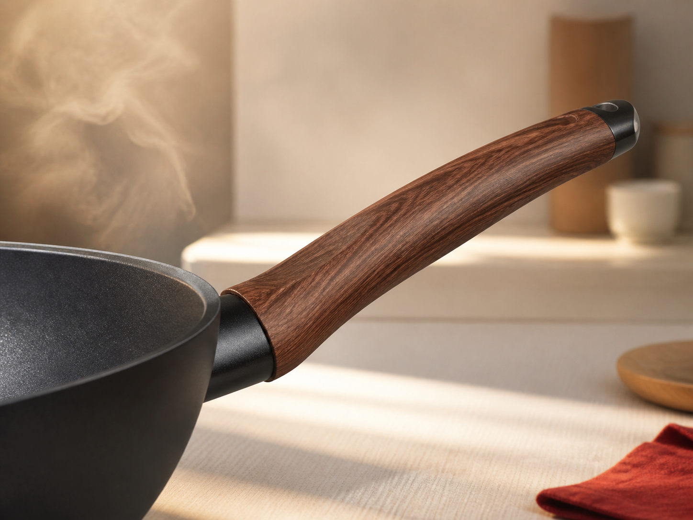

CẦM CHẮC — KHÔNG NÓNG TAYĐảo món an toàn,
Đảo món an toàn,
di chuyển nhẹ nhàng.
Tay cầm công thái học hạn chế truyền nhiệt, cho cảm giác chắc chắn ngay cả khi chảo đầy thức ăn.
- Không cần găng tay khi nấu thông thường
- Vân gỗ chống trượt, dễ cầm nắm